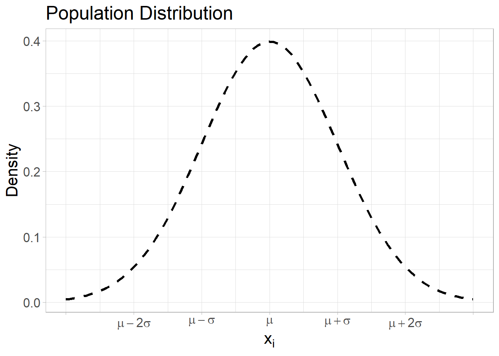
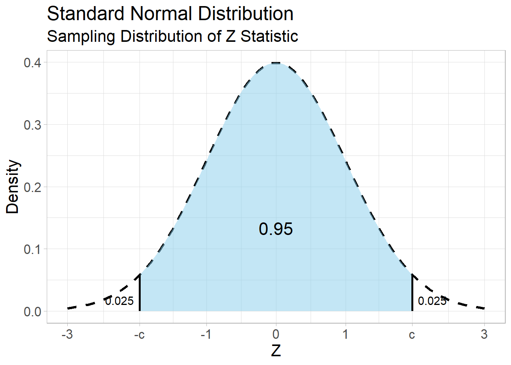
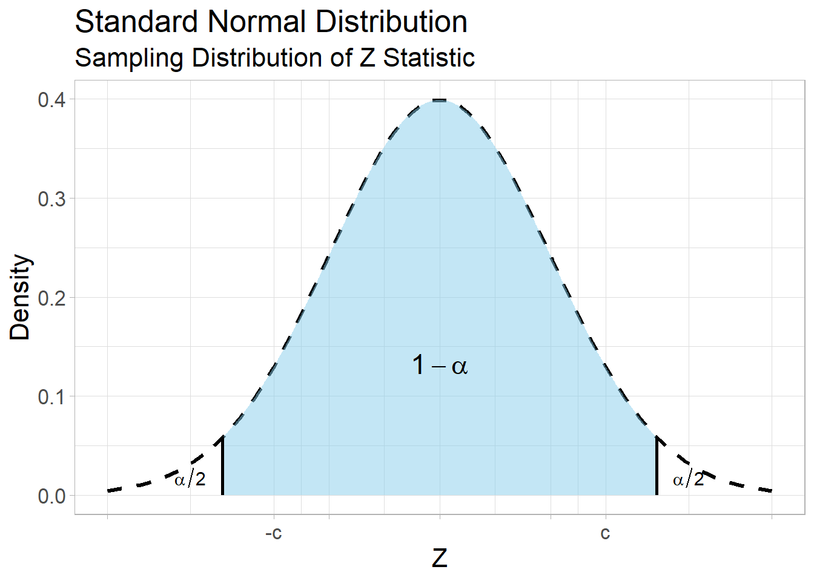

Introduction to Inference: Confidence Intervals
{{< include ../_extensions/r-wasm/live/_knitr.qmd >}}
1 Review
In statistics, a parameter refers to an unknown quantity which characterizes the population distribution of a variable. Statisticians often denote a variable by an uppercase letter and a parameter by a Greek letter. Below are some examples.
Let \(X = 1\) if a person carries a certain virus and \(X = 0\) otherwise. Let \(\theta\) be the probability of \(X = 1\). In other words, \(\theta\) is the proportion of people who carry the virus in the population.
Let \(X\) be the number of car accidents per year. Let \(\theta\) be the expectation of \(X\). In other words, \(\theta\) is the annual average number of car accidents in the population.
Let \(X\) be the hours that college students study per week. Let \(\mu\) be the expectation of \(X\) and \(\sigma\) be the standard deviation of \(X\). In other words, \(\mu\) is the weekly average study hours in the population, and \(\sigma\) is the standard deviation of weekly study hours in the population.
One important goal of statistics is to estimate an unknown parameter based on a sample.
2 Two Kinds of Estimation
There are two kinds of estimation. The first kind is point estimation, and the second kind is interval estimation. For the purpose of demonstration, let us assume that the population distribution of a numeric variable, \(X_i\) follows a normal distribution.

Given a sample \((X_1, X_2, \dots, X_n)\) of size \(n\) from the population, it is somewhat reasonable to estimate the population average \(\mu\) by the sample mean \(\bar{X} = \frac{1}{n} \sum_{i=1}^n X_i\).
If it is a large simple random sample, according to the Central Limit Theorem, the approximate sampling distribution of the sample mean is \(\bar{X} \sim \mathrm{N}(\mu, \texttt{SE})\) where \(\texttt{SE} = \frac{\sigma}{\sqrt{n}}\).
The theorem implies that, if the sample size \(n\) is large, the sample mean \(\bar{X}\) cannot be too far away from the population average \(\mu\). No matter how large \(n\) is, however, the probability that \(\bar{X} = \mu\) is zero. It motivates us to estimate \(\mu\) using an interval \(L\) and \(U\) so that the probability of \(L \le \mu \le U\) is high.
Estimating \(\mu\) by \(\bar{X}\) is called point estimation for \(\mu\). It is a best guess for \(\mu\) using a single statistic. Estimating \(\mu\) by \((L, U)\) is called interval estimation for \(\mu\). It is an interval guess to capture \(\mu\) using two statistics. If we formulate \(L\) and \(U\) so that \(P(L \le \mu \le U) = 0.95\), then \((L, U)\) is called a 95% confidence interval (or CI) for \(\mu\).
3 Derivation of 95% CI for Population Mean
According to the Central Limit Theorem, if we repeat simple random sampling of a large size \(n\) from a population, the approximate sampling distribution of the sample mean is \(\bar{X} \sim \mathrm{N}(\mu, \texttt{SE})\) where \(\texttt{SE} = \frac{\sigma}{\sqrt{n}}\).
Let \(Z = \frac{\bar{X} - \mu}{\texttt{SE}}\) which is referred to as a Z statistic.
Then the approximate sampling distribution of the Z statistic is \(Z \sim \mathrm{N}(0,1)\). Let \(c\) be the constant such that \(P(-c \le Z \le c) = 0.95\) as shown below.

We can calculate \(c = 1.96\) using \(\texttt{qnorm(0.975)}\) in R. Then:
\[ \begin{aligned} P\left( -c \le Z \le c \right) = 0.95 \,\,\, & \Rightarrow \,\,\, P\left( -1.96 \le \frac{\bar{X} - \mu}{\texttt{SE}} \le 1.96 \right) = 0.95 \\& \Rightarrow \,\,\, P\left( -1.96 \cdot \texttt{SE} \le \bar{X} - \mu \le 1.96 \cdot \texttt{SE} \right) = 0.95 \\& \Rightarrow \,\,\, P\left( 1.96 \cdot \texttt{SE} \ge \mu - \bar{X} \ge -1.96 \cdot \texttt{SE} \right) = 0.95 \\& \Rightarrow \,\,\, P\left( \bar{X} + 1.96 \cdot \texttt{SE} \ge \mu \ge \bar{X} -1.96 \cdot \texttt{SE} \right) = 0.95 \\& \Rightarrow \,\,\, P\left( \bar{X} - 1.96 \cdot \texttt{SE} \le \mu \le \bar{X} + 1.96 \cdot \texttt{SE} \right) = 0.95 \, . \end{aligned} \]
Therefore, \(( \bar{X} - 1.96 \cdot \texttt{SE}, \, \bar{X} + 1.96 \cdot \texttt{SE} )\) is a 95% CI for \(\mu\). In other words, this interval estimation captures the unknown value of \(\mu\) with a probability of 0.95.
In practice, \(\texttt{SE} = \frac{\sigma}{\sqrt{n}}\) is unknown because \(\sigma\) is also an unknown parameter, and we can replace the population standard deviation \(\sigma\) by the sample standard deviation \(S = \sqrt{ \frac{1}{n-1} \sum_{i=1}^n (X_i - \bar{X})^2 }\). Therefore, a practical calculation of a 95% CI for \(\mu\) is
\[ \left( \bar{X} - 1.96 \cdot \frac{S}{\sqrt{n}} , \, \bar{X} + 1.96 \cdot \frac{S}{\sqrt{n}} \right) \, . \]
3.1 Case Study I: Average Gestation Age
Using \(\texttt{king.csv}\), we can estimate the population average gestation age (weeks) of newborn babies in 2001 in King County.
Using \(z = 1.96\), calculate the interval estimate of the true mean gestation periods (in weeks) of infants in king county.
Interpretation Given the simple random sample of 2,500 women from the population, we estimate that the population mean of gestation length is 38.88 weeks (about 9 months), and we are 95% confident that the true population mean gestation period is a single value between 38.78 and 38.97 weeks for all King County births.
3.1.1 Incorrect Interpretations
- The above interpretation is about the unknown population average \(\mu\), not about individual mothers’ gestational ages. The calculated 95% CI (38.78, 38.97) does not imply that 95% of mothers have gestational age between 38.78 and 38.97 weeks.
- There is not a 95% chance the mean is within the interval. The 95% refers to the success rate of the method/interval to capture the true mean.
- The interval tells us nothing about the sample mean or multiple sample means.
It implies that the true population average \(\mu\) is between 38.78 and 38.97 weeks, and we fixed a probability of 0.95 (95% chance) that a calculated interval will capture \(\mu\). We never know whether (38.78, 38.97) captured \(\mu\) or not.
4 Derivation of 95% CI for Population Proportion
Suppose \(X\) is a Bernoulli random variable such that \(X = 1\) or \(X = 0\), and let \(\theta\) be the probability of \(X = 1\). In this special case, the mean of \(X\) is \(\theta\), and the standard deviation of \(X\) is \(\sqrt{\theta(1 - \theta)}\). The Central Limit Theorem and the derivation of 95% CI in Section 3 are applied in the same manner, and \(( \bar{X} - 1.96 \cdot \texttt{SE}, \, \bar{X} + 1.96 \cdot \texttt{SE} )\) is a 95% CI for \(\theta\) where \(\texttt{SE} = \sqrt{ \frac{\theta(1-\theta)}{n} }\). In practice, \(\texttt{SE} = \sqrt{ \frac{\theta(1-\theta)}{n} }\) is unknown because \(\theta\) is an unknown parameter to be estimated, and we can replace \(\theta(1-\theta)\) by the statistic \(\bar{X} (1 - \bar{X})\). As a result, the practical calculation of a 95% CI for \(\theta\) is
\[ \left( \bar{X} - 1.96 \cdot \sqrt{ \frac{\bar{X}(1-\bar{X})}{n} } , \, \bar{X} + 1.96 \cdot \sqrt{ \frac{\bar{X}(1-\bar{X})}{n} } \right) \, . \]
It might seem funny to think about \(\bar{X}\) as the summary statistic for a categorical variable, but in reality, for a Bernoulli Random Variable, the sample mean is equivalent to the sample proportion.
\[ \hat{p} = \sum_{i = 1}^{n}\frac{X_i}{n} = \frac{1 + 1 + 0 + 1 + ... + 1 + 0}{n} \]
So we can rewrite the confidence interval calculation as:
\[ \left( \hat{p} - 1.96 \cdot \sqrt{ \frac{\hat{p}(1-\hat{p})}{n} } , \, \hat{p} + 1.96 \cdot \sqrt{ \frac{\hat{p}(1-\hat{p})}{n} } \right) \, . \]
4.1 Case Study II: Population Proportion of Newborn Boys
Using \(\texttt{king.csv}\), we can estimate the population proportion of newborn boys in 2001 in King County.
Given the simple random sample of 2,500 newborn babies from the population, we estimate that the population proportion of newborn boys 0.516 (51.6%), and we are 95% confident that the population proportion of boys born in King County is single value between 0.497 and 0.536 (49.7% and 53.6%).
Note: Even though that point estimate 0.516 is above 0.5, the resulting 95% CI (0.497, 0.536) captures 0.5. In this case, at a confidence level of 0.95, we do not have statistically discernable evidence to claim that the true population proportion of boys is above 0.5.
5 Wrap-Up
In your groups work on the following problems. You can check your answers below. All calculations (numeric answers) must be rounded to four decimals (e.g., 0.6667 instead of 2/3, 0.5 or 0.5000 instead of 1/2) unless specified. Be ready to show your work on the board.
5.0.1 Problem 1
Let \(\mu\) be the population average to be estimated. Fill in the blank.
- Estimating \(\mu\) by the sample mean \(\bar{X}\) is called [p… e…] for \(\mu\). It is a best guess for \(\mu\).
TipAnswer
point estimation
- Even if the sample size \(n\) is large, the probability of \(\bar{X} = \mu\) is [z…].
TipAnswer
zero
- Estimating \(\mu\) by an interval \((L, U)\) is called [i… e…] for \(\mu\). It is an interval guess for \(\mu\).
TipAnswer
interval estimate
- If \(L\) and \(U\) are formulated such that the probability of \(L \le \mu \le U\) is 0.95, \((L, U)\) is called a 95% [c… i…] for \(\mu\).
TipAnswer
confidence interval
5.0.2 Problem 2
When \(Z \sim \mathrm{N}(0, 1)\), the critical value \(c\) such that \(P(-c \le Z \le c) = 0.95\) is calculated by \(\texttt{qnorm}(0.975)\) because \(P( Z \le c ) = 0.975\). Similarly, the critical value \(c\) such that \(P(-c \le Z \le c) = 1 - \alpha\) is calculated by \(\texttt{qnorm}(1 - \alpha/2)\) because \(P(Z \le c) = 1 - \alpha / 2\).

Calculate the critical value \(c\) when:
- \(1 - \alpha = 0.9\)
TipAnswer
1.6449
- \(1 - \alpha = 0.95\)
TipAnswer
1.96
- \(1 - \alpha = 0.98\)
TipAnswer
2.3263
- \(1 - \alpha = 0.99\)
TipAnswer
2.5758
5.0.3 Problem 3
Let \(\mu\) be the parameter to be estimated, and let \((L, U)\) be a CI for \(\mu\). We say a CI is precise when its length \(U - L\) is short. Suppose we observed the following statistics: \(\bar{X} = 65.5\), \(S = 1.5\), and \(n = 100\). Calculate the length of a CI given the confidence level.
- 90% CI for \(\mu\)
TipAnswer
0.4935
- 95% CI for \(\mu\)
TipAnswer
0.588
- 98% CI for \(\mu\)
TipAnswer
0.6979
- 99% CI for \(\mu\)
TipAnswer
0.7727
5.0.4 Problem 4
Multiple-choice: A CI for \(\mu\) becomes more precise as…
5.0.5 Problem 5
Multiple-choice: Suppose 10,000 researchers do simple random sampling of the same size \(n\) from the same population. Let \(\mu\) be the unknown population average to be estimated. If each researcher calculates a 95% CI for \(\mu\) using their simple random samples, then…
5.0.6 Problem 6
In baseball, loosely speaking, a batting average is defined as the probability of making a successful hit when a batter is at bat. Let \(\theta\) be the true batting average of a baseball player. Suppose the baseball player made 44 successful hits out of 222 times at bat.
a Calculate the point estimate (\(\bar{X}\)) for \(\theta\).
TipAnswer
0.1982
b Calculate the lower bound of 95% CI (\(L\)) for \(\theta\).
TipAnswer
0.1458
- Calculate the upper bound of 95% CI (\(U\)) for \(\theta\).
TipAnswer
0.2506
6 Assignment
New Instruction: You must submit an html file generated by Quarto in Canvas. While you can check numeric answers here, complete work is expected for the problems below. The assignment will be graded based on the quality of the html document (e.g., completeness and organization. If an R code which is not demonstrated in the course material is used, it will be regarded as use of unacceptable sources and/or aids, and it will result in zero in the assignment. Such a case may be reported according to the CSUMB Academic Integrity Policy.*
6.0.1 Problem 1
Let \(\theta\) be the U.S. President’s approval rating (i.e., the population proportion of Americans who think the President is doing a good job). In May 2025, Gallup randomly sampled 1,003 adults, and 431 of them responded that the President is doing a good job.
- Calculate the sample proportion \(\hat{p}\) of Americans who approve the President’s job.
TipAnswer
0.4297
- Calculate the standard error \(\texttt{SE}\).
TipAnswer
0.0156
- Calculate the critical value \(c\) for 99% CI for \(\theta\).
TipAnswer
2.5758
- Calculate the lower bound \(L\) of 99% CI for \(\theta\).
TipAnswer
0.3894
- Calculate the upper bound \(U\) of 99% CI for \(\theta\).
TipAnswer
0.47
6.0.2 Problem 2
The fuel efficiency of a car model is important for both environmental and economic perspectives. Even when consumers drive the same car model, the fuel efficiency, measured by miles per gallon, varies depending on their driving habits, maintenance conditions, and road conditions (uphills, downhills, local roads, highways). In this regard, the population average fuel efficiency (miles per gallon) is a benchmark, and it can be estimated by consumers’ report. Download prius2005. It is a sample of 204 drivers of 2005 Toyota Prius. Let \(\mu\) be the population average to be estimated.
- Calculate the sample mean \(\bar{X}\) of miles per gallon.
TipAnswer
48.102
- Calculate the standard error \(\texttt{SE}\).
TipAnswer
0.3397
- Calculate the critical value \(c\) for 95% CI for \(\mu\).
TipAnswer
1.96
- Calculate the lower bound \(L\) of 95% CI for \(\mu\).
TipAnswer
47.4362
- Calculate the upper bound \(U\) of 95% CI for \(\mu\).
TipAnswer
48.7678
6.0.3 Problem 3
Let \(\theta\) be the probability of survival when a person attempts suicide. Download ShandongChina.csv. It is a record of suicide attempts in 2009, 2010, and 2021 in a rural population in Shandong, China (Sun et al., 2015).
- Calculate the sample proportion \(\bar{X}\) of survived people out of all people who attempted suicide.
TipAnswer
0.5115
- Calculate the standard error \(\texttt{SE}\).
TipAnswer
0.0099
- Calculate the critical value \(c\) for 95% CI for \(\theta\).
TipAnswer
1.96
- Calculate the lower bound \(L\) of 95% CI for \(\theta\).
TipAnswer
0.4922
- Calculate the upper bound \(U\) of 95% CI for \(\theta\).
TipAnswer
0.5308
6.0.4 Problem 4
Let \(\theta\) be the probability of a goal when a player attempts a shot. In K League, a professional soccer league in South Korea, there were a total of 577 goals out of 5279 shot attempts in 2024.
- Calculate the sample proportion \(\hat{p}\) of goals out of all shot attempts.
TipAnswer
0.1093
- Calculate the standard error \(\texttt{SE}\).
TipAnswer
0.0043
- Calculate the critical value \(c\) for 98% CI for \(\theta\).
TipAnswer
2.3263
- Calculate the lower bound \(L\) of 98% CI for \(\theta\).
TipAnswer
0.0993
- Calculate the upper bound \(U\) of 98% CI for \(\theta\).
TipAnswer
0.1193
6.0.5 Problem 5
In Problems 1 to 4, you calculated a CI for an unknown parameter. Write the interpretation of each calculated CI in the context. Below is a template.
Based on a sample of [sample size in the context] observed from [population in the context], we estimate that [parameter in the context] is a single value between [calculated L] and [calculated U] [units if applicable] at a confidence level of [fixed confidence level].
Interpret the CI calculated in Problem 1.
Interpret the CI calculated in Problem 2.
Interpret the CI calculated in Problem 3.
Interpret the CI calculated in Problem 4.